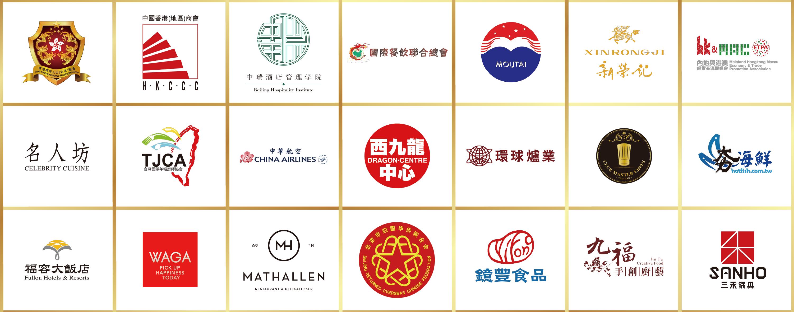

「環球廚神．國際挑戰賽」自2010年起已連續8年成功舉辦多屆比賽，匯聚世界精英參賽者及評審多達3,000人。2016年舉辦「環球廚神．世界菁英賽」有幸成為「香港成立20周年慶典」認可慶祝活動。2018年首次衝出香港，主辦機構《環球Gourmet》誠邀中國台灣「基隆市政府」擔任首席指導機構，攜手合辦「環球廚神．國際挑戰賽2018」台灣站，取得空前成功。而今年舉辦的「環球廚神．國際挑戰賽2019」北京站，正好迎來中華人民共和國成立70周年大喜日子，實在是普天同慶。是次比賽有幸榮獲多個中國內地政府單位、專業團體及商業機構支持，包括「北京市歸國華僑聯合會」、「內地及港澳經貿交流促進會」、「香港專業人士(北京)協會」、「中國香港(地區)商會」、「中國新榮記集團」、「香港中華電力有限公司」等等。
Link: https://www.youtube.com/watch?v=WSIBK4PEzDg
Link: https://www.clp.com.hk/zh/community-and-environment/community-funds/equip-upgrade
今年主辦單位將於台灣、新加坡及香港舉辦「環球廚神．精英選拔賽2019」，分別於6月18日假「桃園市私立光啟高級中學」舉辦「環球廚神．精英選拔賽」台灣站，以及於7至8月舉辦新加坡及香港站選拔賽，希望透過比賽從而提升廚藝界專業水平。選拔賽設有「學生組」、「青年廚師組」及「資深名廚組」，屆時將匯聚各地菁英廚師參與，勝出選手將前往北京參與「環球廚神．國際挑戰賽2019」北京站總決賽。
今年的北京站總決賽，正好迎來中華人民共和國成立70周年普天同慶大喜日子，更榮獲北京官方專業團體及單位支持，包括北京市歸國華僑聯合會、香港專業人士(北京)協會、內地及港澳經貿交流促進會、中國香港(地區)商會，中國新榮記集團等，陣容鼎盛；比賽將於10月15日，選址於「北京中瑞酒店管理學院」舉辦。比賽設有「學生組」、「青年廚師組」及「資深名廚組」屆時將匯聚法國、荷蘭、英國、挪威、芬蘭、澳洲、紐西蘭、新加坡、日本、泰國、馬來西亞、印尼、越南、柬埔寨及中港澳台等十多個國家、70位精英廚師參與。參加今次總決賽的高手包括：來自挪威、榮登首屆「環球廚神．世界菁英賽2017」個人賽總冠軍寶座的Niko Tahti，將越級挑戰「資深名廚組」，而去年勇奪「學生組」總冠軍、現職於荷蘭名廚Richard van Oostenbrugge和Thomas Groot新加坡創辦餐廳table65的Jason de Haan，亦將越級挑戰「青年廚師組」，屆時於比賽中施展渾身解數，一較高下，競逐新一代環球廚神「世界總冠軍」，贏取全球廚藝界最高榮譽「環球廚神．龍騰金盃」！ Tahti，將越級挑戰「資深名廚組」，而去年勇奪「學生組」總冠軍、現職於荷蘭名廚Richard van Oostenbrugge和Thomas Groot新加坡創辦餐廳table65的Jason de Haan，亦將越級挑戰「青年廚師組」，屆時於比賽中施展渾身解數，一較高下，競逐新一代環球廚神「世界總冠軍」，贏取全球廚藝界最高榮譽「環球廚神．龍騰金盃」！
此外，比賽另一高潮肯定是「環球廚神．明星名廚世界挑戰賽」，讓世界級名廚名人一展身手，廚神師傅包括：「環球廚神」創辦人陳植漢、香港米芝蓮名廚鄭錦富、挪威Mathallen總廚Gunnar Jensen、荷蘭名廚Theo van Rensch、台灣《型男大主廚》郭主義、泰皇御廚V. Vatcharavee、新加坡米芝蓮名廚梁志忠等，將與世界各地名人徒弟包括各國駐北京大使館夫人及北京政協名人粉墨登場，即場跟隨廚神師傅學藝，炮製色香味美的菜式，爭奪世界冠軍寶座。

自2004年創刊至今已逾十五年的《環球Gourmet》，每月於全港六百多間食肆免費派發萬多本雜誌，讀者群眾逾四萬多人，分別於2011及2014年勇奪「GOURMAND世界最佳飲食雜誌」香港區大獎；而歷屆比賽得獎食譜《環球廚神．殿堂食譜》均榮獲「GOURMAND世界最佳專業烹飪書」香港區大獎，屢獲殊榮。為配合雜誌邁向國際化及與世界各地美食文化接軌，由2017年4月起進行全新改革，進一步優化雜誌內容及計劃開拓網上版本，並正式命名為《環球Gourmet》，繼續致力提供最時尚之飲食資訊。

《環球Gourmet》出版人「美味傳訊」是專業的餐飲業務、品牌顧問公司及出版社，尤其於餐飲、酒店及食品行業具備豐富經驗。業務包括專業餐飲管理及發展、食品及廚藝推廣、市場營銷策略、設計及專業攝影、大型宴會統籌及媒體公關等，提供一站式業務推廣服務，絕對是您積極拓展業務的最佳伙伴。作為專業出版人，我們憑著講述由1846年至今的香港飲食歷史著作《老港滋味》，於Gourmand World Cookbook Awards榮獲2014年最佳廚藝歷史圖書大獎–全球冠軍，為港增光。